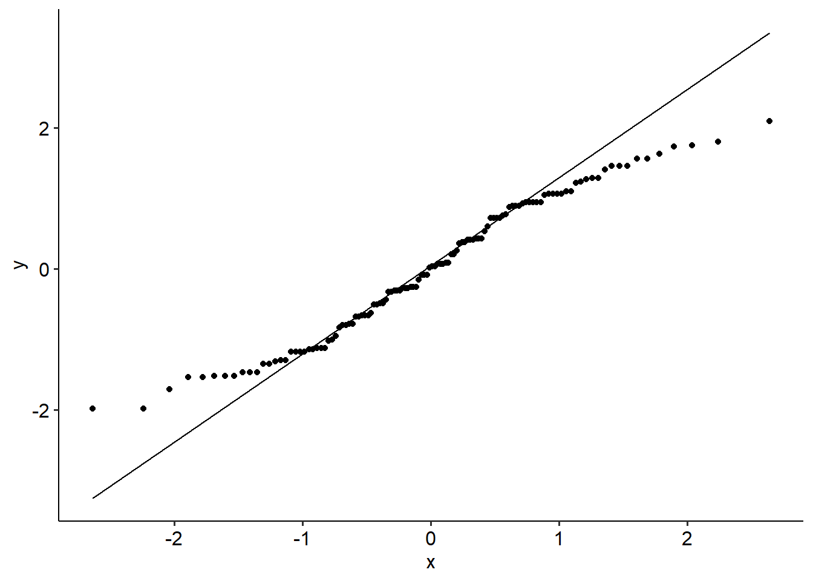
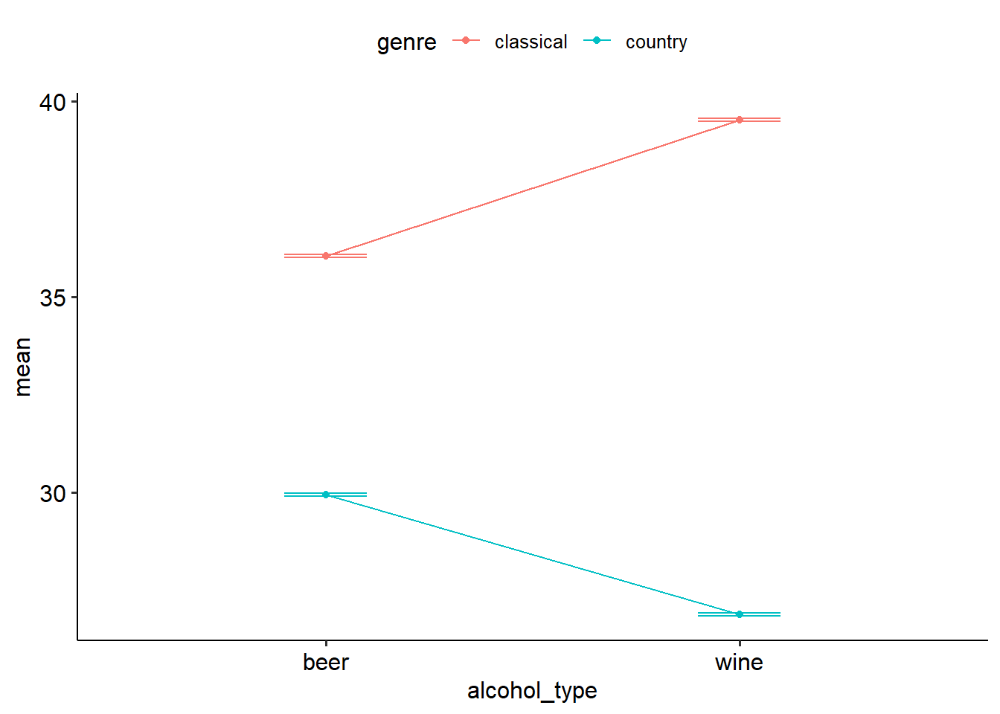

9.6 Two-way mixed ANOVA
9.6.1 Introduction
In a mixed factorial design, we want to see the effect of a between groups variable and a within-groups variable on a continuous DV. These are also sometimes called repeated measures ANOVAs (i.e. repeated measures designs with a between-group variable), but this can be a little confusing; for that reason, calling them a mixed factorial model is preferred.
The data we’ll use for this one is of a mock longitudinal randomised-controlled trial. This kind of design is common when testing the effect of an intervention - and that’s exactly what we’ll do here. This mock dataset is also a bit more complex than the previous ones we’ve looked at just to give the full range of assumption testing and modelling that we have to do.
9.6.2 Example
Elaine and Chaise ran an RCT testing the effect of a music listening intervention on anxiety scores. To do this, participants were randomly allocated to three conditions: a music listening intervention (listen to a podcast for 30 minutes a day), a control exercise intervention (walk for 30 minutes a day) and a control nothing intervention (do nothing). Participants were tested at three timepoints: at the start of the study, at the 6 week mark and then at the 12 week mark. (With thanks to the datarium package for providing a perfect test dataset for this example.)
In other words, we have two variables:
- Intervention: a between-groups variable, because participants were randomly assigned to one of three interventions (3 levels; Control, Exercise, Music)
- Timepoint, a within-groups variable as all participants were measured at 3 timepoints (3 levels: 0 weeks, 6 weeks, 12 weeks)
This gives us a two-way, 3 x 3 mixed factorial ANOVA. Let’s start by visualising anxiety scores for the three interventions. A boxplot or bar graph is useful here.
## Rows: 135 Columns: 4
## ── Column specification ──────────────────────────────
## Delimiter: ","
## chr (2): group, time
## dbl (2): id, anxiety
##
## ℹ Use `spec()` to retrieve the full column specification for this data.
## ℹ Specify the column types or set `show_col_types = FALSE` to quiet this message.twoway_mixed %>%
ggplot(
aes(x = time, y = anxiety, colour = group)
) +
geom_boxplot(size = 1) +
# scale_x_discrete(labels = c("0 weeks", "6 weeks", "12 weeks")) +
labs(
x = "Time point",
y = "Anxiety score",
colour = "Intervention\ngroup"
) +
scale_colour_brewer(palette = "Set1") +
theme(legend.position = "right")
In a mixed ANOVA, we test the effect of both a between-groups and a within-groups variable. This means that the specific assumptions that apply to both between- and within-subject designs now carry over into this design. This means that the following assumptions apply:
- The data should have multivariate normality. Our QQ plot looks a little non-linear, so we might have an issue here.
aov(anxiety ~ group * time, data = twoway_mixed) %>%
broom::augment() %>%
ggplot(aes(sample = .std.resid)) +
geom_qq() +
geom_qq_line()
- Homogeneity of variance - the between-subject groups should have the same variance, at each level of the within-subjects variable. None of the tests are significant (p > .05), so we’re ok here. To do this in R, we run Levene’s test at each timepoint:
## Warning: There were 3 warnings in `mutate()`.
## The first warning was:
## ℹ In argument: `data = map(.data$data, .f, ...)`.
## Caused by warning in `leveneTest.default()`:
## ! group coerced to factor.
## ℹ Run `dplyr::last_dplyr_warnings()` to see the 2
## remaining warnings.- Sphericity of the within-subject variable must be met. Our sphericity assumption technically isn’t violated (p = .079), but this is so close to an arbitrary threshold that we might consider reporting corrected versions anyway. However, we’ll forge ahead with our original omnibus model and report that.
aov_ez()can give you this in the output below.
9.6.3 Output
Below is our main output from R. You’ll note that the omnibus outputs are actually split across two tables - one for the within-subject effects, and another for the between-subject effects. This simply makes it easy to identify which variables are what types. Based on the output, we can see that we have a significant main effect of group (F(2, 42) = 4.352, p = .019), and also a significant main effect of time (F(2, 84) = 394.909, p < .001). We also have a significant interaction (F(4, 84) = 110.188, p < .001).
twoway_mixed_aov <- aov_ez(
data = twoway_mixed,
id = "id",
dv = "anxiety",
between = "group",
within = "time",
anova_table = list(es = "pes")
)## Converting to factor: group## Contrasts set to contr.sum for the following variables: group## Anova Table (Type 3 tests)
##
## Response: anxiety
## Effect df MSE F pes p.value
## 1 group 2, 42 7.12 4.35 * .172 .019
## 2 time 1.79, 75.24 0.09 394.91 *** .904 <.001
## 3 group:time 3.58, 75.24 0.09 110.19 *** .840 <.001
## ---
## Signif. codes: 0 '***' 0.001 '**' 0.01 '*' 0.05 '+' 0.1 ' ' 1
##
## Sphericity correction method: GG##
## Univariate Type III Repeated-Measures ANOVA Assuming Sphericity
##
## Sum Sq num Df Error SS den Df F value Pr(>F)
## (Intercept) 34919 1 299.146 42 4902.6660 < 2e-16 ***
## group 62 2 299.146 42 4.3518 0.01916 *
## time 67 2 7.081 84 394.9095 < 2e-16 ***
## group:time 37 4 7.081 84 110.1876 < 2e-16 ***
## ---
## Signif. codes: 0 '***' 0.001 '**' 0.01 '*' 0.05 '.' 0.1 ' ' 1
##
##
## Mauchly Tests for Sphericity
##
## Test statistic p-value
## time 0.88364 0.079193
## group:time 0.88364 0.079193
##
##
## Greenhouse-Geisser and Huynh-Feldt Corrections
## for Departure from Sphericity
##
## GG eps Pr(>F[GG])
## time 0.89577 < 2.2e-16 ***
## group:time 0.89577 < 2.2e-16 ***
## ---
## Signif. codes: 0 '***' 0.001 '**' 0.01 '*' 0.05 '.' 0.1 ' ' 1
##
## HF eps Pr(>F[HF])
## time 0.9330916 1.037156e-40
## group:time 0.9330916 1.461019e-30Let’s decompose this with simple effects. Doing this in Jamovi is not trivial at all for some reason - you have to really get your hands dirty with Jamovi in order to make this work. There are two main ways you can do this:
- Run a one-way ANOVA at each timepoint - this would be the simple effect of group
twoway_mixed %>%
group_by(time) %>%
t_test(anxiety ~ group, p.adjust.method = "none", detailed = TRUE)emmeans(twoway_mixed_aov, ~ group, by = "time") %>%
contrast(method = "pairwise") %>%
confint(adjust = "bonf")- Run a one-way repeated measures ANOVA for each group - this would be the simple effect of time
twoway_mixed %>%
group_by(group) %>%
emmeans_test(anxiety ~ time, p.adjust.method = "none", detailed = TRUE)emmeans(twoway_mixed_aov, ~ time, by = "group", model = "multivariate") %>%
pairs(infer = TRUE, adjust = "none")## group = control:
## contrast estimate SE df lower.CL upper.CL t.ratio p.value
## X0.weeks - X6.weeks 0.16 0.0950 42 -0.0316 0.352 1.685 0.0994
## X0.weeks - X12.weeks 0.58 0.1227 42 0.3324 0.828 4.727 <.0001
## X6.weeks - X12.weeks 0.42 0.0982 42 0.2218 0.618 4.276 0.0001
##
## group = exercise:
## contrast estimate SE df lower.CL upper.CL t.ratio p.value
## X0.weeks - X6.weeks 0.18 0.0950 42 -0.0116 0.372 1.896 0.0649
## X0.weeks - X12.weeks 1.12 0.1227 42 0.8724 1.368 9.128 <.0001
## X6.weeks - X12.weeks 0.94 0.0982 42 0.7418 1.138 9.571 <.0001
##
## group = music:
## contrast estimate SE df lower.CL upper.CL t.ratio p.value
## X0.weeks - X6.weeks 2.00 0.0950 42 1.8084 2.192 21.063 <.0001
## X0.weeks - X12.weeks 3.45 0.1227 42 3.2057 3.701 28.144 <.0001
## X6.weeks - X12.weeks 1.45 0.0982 42 1.2551 1.652 14.797 <.0001
##
## Confidence level used: 0.95Let’s bulletpoint the main feature of each, and you can refer to the output below as you go through:
- For controls, anxiety scores were not significantly different between the 0 week and 6 week mark (p = .065). However, anxiety scores were significantly lower at 12 weeks compared to 6 weeks (p = .004). Scores were also significantly lower at 12 weeks compared to 0 weeks (p = .002).
- For the exercise group, anxiety scores were not significantly different from 0 weeks to 6 weeks (p = .089). However, anxiety scores significantly decreased from 6 weeks to 12 weeks (p < .001). Scores were also significantly lower after 12 weeks than at 0 weeks (p < .001).
- For the music group, anxiety scores significantly decreased between 0 weeks and 6 weeks (p < .001). Scores were significantly lower at the 12 week mark again compared to the 6 week mark (p < .001). Scores were also significantly lower at 12 weeks compared to 0 weeks (p < .001). These comparisons are best supplemented with the differences in means.